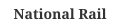

Loading data…
Britain's railways are operated by a patchwork of train operating companies running over a shared national network. Network Rail publishes the full schedule in the Darwin data feeds used by journey planners, as well as realtime train movements and performance records. The following visualizations use timetable and performance data captured for the week around Tuesday 1 April 2025, covering four corridors: c2c, Greater Anglia, CrossCountry, and Great Northern — 202 stations in all.
We attempt to present this information to help people in Britain better understand the trains, how people use the trains, and how the people and trains interact with each other.
On a typical weekday, trains make approximately 12 trips across the four corridors shown here, starting in the early morning and continuing through the evening. This is a synthetic demonstration dataset generated from the real feed structure.
To better understand how the trains operate on a typical day, below are all trips that trains took across the four corridors on Tuesday 1 April 2025. Each vertical line represents a station, and time extends from top to bottom. Steeper lines indicate slower trains. This visualization was first used by Étienne-Jules Marey to visualize train schedules and is typically called a “Marey Diagram.”
| Weekdays | Saturdays | Sundays | |
|---|---|---|---|
| c2c | 3 | 3 | 3 |
| Greater Anglia | 3 | 3 | 3 |
| CrossCountry | 3 | 3 | 3 |
| Great Northern | 3 | 3 | 3 |
| Total | 12 | 12 | 12 |
Locations of each train on the c2c, Greater Anglia, CrossCountry, and Great Northern lines at . Hover over the diagram to the right to display trains at a different time.
Trains are on the right side of the track relative to the direction they are moving.
See the morning rush-hour, midday lull, afternoon rush-hour, and the evening lull.
To better compare the individual trips on this day, the visualization below shows all of the trips from the above diagram juxtaposed with the starting points lined up so you can see the range of fastest to slowest trips, as well as variation in trip times based on the time of day. The trains slow down a little bit during the morning rush-hour. The afternoon rush-hour is usually the worst time of day for journey times. The midday lull and evening lull are both fairly consistent. Hover over the time scale on the left to highlight trips during different parts of the day. Click on a line to see at what time the train was at each stop.
In a typical weekday, hundreds of thousands of people pass through the stations along these four corridors. The busiest days are weekdays, with ridership roughly halving at the weekend.
This heatmap shows the average number of people that enter and exit stations along the four corridors for every hour over the full week based on records from ticket gates at each station. Each row represents one day. You can see weekends and weekdays with daily peaks at rush hour. Our exit data is less reliable since not all stations require that people exit through a gate.
The table and map below breaks down the week's entries and exits by station. Hover over a row in the table to highlight the corresponding circle on the map, or vice-versa. Click on a row in the table to show a detailed heatmap for the entrances to and exits from that station over the week. Click and drag on several table rows to highlight a range of stations.
You can see the busiest stations stand out clearly. FST tops the list, followed close by ALN , and then ALR . Next to each station are heatmaps showing entrances and exits to each station per-hour for weekdays and weekends/holidays. You can see that some stations are work stations since their exits peak in the morning and entrances peak in the afternoon and that some stations are home stations since their entrances peak in the morning and exits peak in the afternoon. Some stations are just busy all the time.
Each circle above and row in the table represent a station, hover over one to highlight the other. Next to each station are heatmaps showing entrances and exits to each station per-hour for weekdays and weekends/holidays.
When you look back at the Marey diagram, the slope of each line tells you how fast a train is going and the time it takes to get between stations. When all of the start and stop times are lined up you can see a drastic variation in the time it takes to get between stops throughout the day. If you have ever ridden the railway during rush hour then you have experienced what the steep lines in the Marey diagram feel like first-hand.
What causes these delays? It’s hard to know for sure, but it appears that the number of people riding the railway is a factor.
This visualization shows congestion and delay on the four corridors for the first full week of the dataset. The gray bands show the total number of entries into all stations per minute over time for each day of the week. The colored bands below indicate whether the trains are running faster or slower than normal.
The map shows the congestion and delay across the system at a time when you hover over the chart on the right. The thickness of each line at a stop indicates number of entries per minute at that stop, and the color on the right-hand side of a track indicates delay in that direction using the same scale as the colored bands.
You can see the morning and evening rush-hour peaks on every weekday, for example on Thursday, Friday, and Monday. You can also compare how Saturday and Sunday differ from the weekdays, for example Saturday evening's rush hour versus Sunday evening's, or Tuesday morning compared to a weekday morning.
How do all of these factors affect your commute? Click and drag on the map from a starting station to an ending station to see a detailed breakdown of how long that trip takes at different points during a typical workday. The points on top show all of the trip durations for a given starting time from the start to destination and the points on bottom show all of the times between when trains leave the start station going to the destination station. The time between trains is the longest you would possibly need to wait if you arrived just as the previous train was leaving. The blue band excludes the shortest and longest 10% of all transit times, leaving behind the most-likely 80% range and the orange band does the same for wait times between trains. The dark lines show the middle point where 50% of the time wait/transit times are higher and 50% of the time they are lower.
In general, delays go up during rush hour but trains come more frequently, for example if you look at Fenchurch Street to Southend Central you will notice that the transit times go up as the wait times go down. If you drag across the chart, the paragraph below will tell you that these effects roughly balance each other out and the most-likely trip duration (half the normal time between trains plus total transit time) stays fairly constant. Commute data is currently available for the eastern-region origins (Fenchurch Street, Liverpool Street, King's Cross, Moorgate, Cambridge, Peterborough, Norwich, Ipswich, Southend Central and Stansted); picking any other pair of stations will show a message explaining that no data is available for that origin yet.
This project is a port of the MBTA Viz project created by Michael Barry and Brian Card for a graduate course in Data Visualization at WPI. Several open-source projects were used under the MIT License including D3, Bootstrap, Underscore, Moment.js, es6-shim, and D3-tip.
The source code and raw data are available on github for the original MBTA Viz; the UK port lives in this repository.
Data: Network Rail Darwin timetable & performance feeds, licensed under the Open Government Licence v2.0 with NRE variations.

Live platform numbers are time-bound and suppressed per feed direction. Not an official National Rail product.